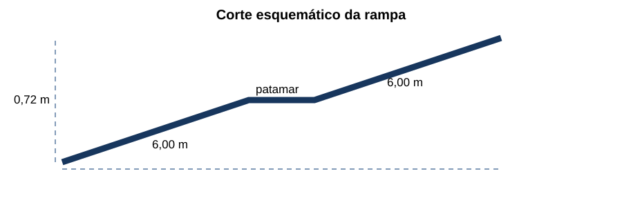
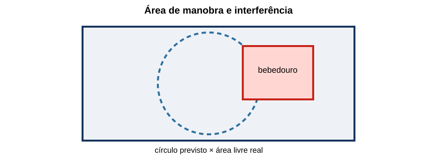
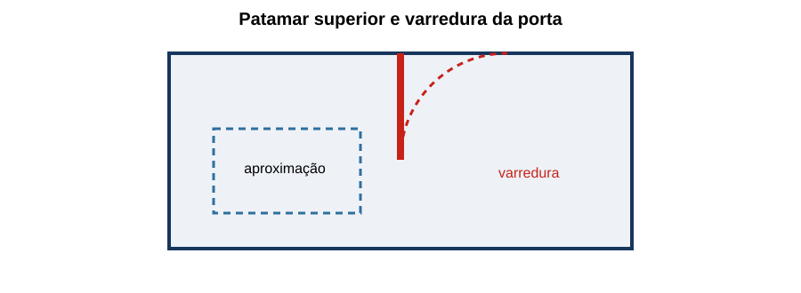
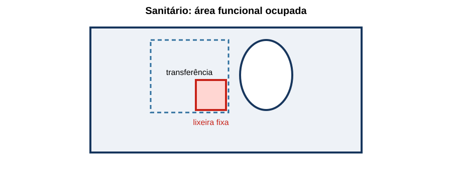
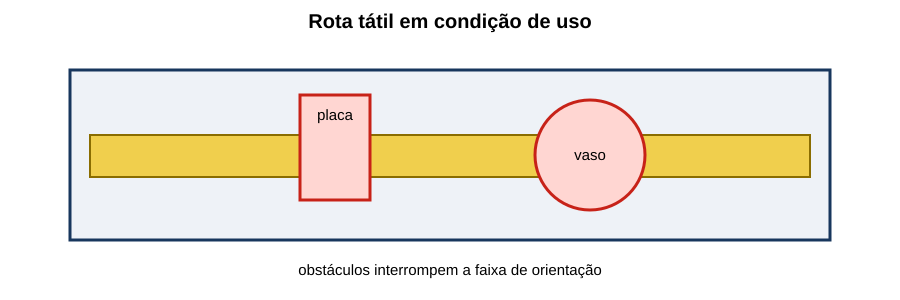

Fiscalização de Obras, Vistorias & NBR 9050
30 questões autorais calibradas pelo padrão IDECAN • Bloco Prata
| Questão 01 | Fiscalização Contratual • Limites de Atuação |
Em reforma de prédio público, a fiscalização constata que a rota executada para um alimentador diverge do projeto e atravessa área sujeita a alagamento. A contratada alega ganho de prazo. A providência tecnicamente adequada é:
A) aceitar a rota e registrar a alteração somente no as built, pois a execução já consumiu recursos.
B) determinar a demolição imediata de todo o serviço, sem registrar evidências ou ouvir o responsável técnico.
C) registrar a ocorrência, impedir o prosseguimento do trecho afetado e exigir análise e solução formalmente aprovadas.
D) autorizar verbalmente a continuidade e solicitar compensação financeira na medição seguinte.
Gabarito Comentado: Alternativa C
A fiscalização deve preservar evidências, controlar o risco e exigir tratamento formal da divergência. A solução precisa ser analisada quanto a desempenho, segurança, custo e prazo e aprovada pelos responsáveis competentes antes da continuidade.
Análise das armadilhas:Confundir urgência com autorização para improviso; ou imaginar que o as built legitima retroativamente qualquer desvio.Como pensar nesta questão:Separe constatação, contenção, análise, aprovação e execução. O fiscal não deve transformar uma decisão técnica relevante em ajuste verbal.
| Questão 02 | Medição de Serviços • Critério de Pagamento |
Uma planilha contratual remunera lançamento de cabo por metro efetivamente instalado. A contratada apresenta 520 m com base nas notas de saída do almoxarifado; o levantamento de campo registra 468 m instalados, 22 m de sobras identificadas e 30 m ainda na bobina. Qual quantidade sustenta a medição?
A) 468 m, desde que conferidos os trechos executados e os critérios contratuais de medição.
B) 490 m, somando o cabo instalado às sobras cortadas e mantidas no canteiro.
C) 520 m, porque a saída do almoxarifado transfere o material ao centro de custo da obra.
D) 498 m, excluindo apenas o material que permaneceu na bobina original.
Gabarito Comentado: Alternativa A
Saída de estoque não comprova execução. Se o item é medido por metro instalado, a evidência principal é a quantidade incorporada e aceita: 468 m. Sobras e material não lançado devem ser tratados conforme o contrato, mas não se tornam automaticamente serviço executado.
Análise das armadilhas:Misturar consumo, aquisição e execução física; todos são registros úteis, porém medem fatos diferentes.Como pensar nesta questão:Comece pela unidade e pela descrição do item. Depois escolha a evidência que demonstra exatamente o evento remunerado.
| Questão 03 | Cronograma Físico-Financeiro • Avanço Ponderado |
Um pacote possui três atividades: eletrocalhas, peso 30%, avanço 100%; cabos, peso 45%, avanço 60%; testes, peso 25%, avanço 20%. Qual é o avanço físico ponderado do pacote?
A) 53%.
B) 62%.
C) 60%.
D) 65%.
Gabarito Comentado: Alternativa B
O avanço é a soma dos produtos peso × realização: $0{,}30\cdot1{,}00+0{,}45\cdot0{,}60+0{,}25\cdot0{,}20=0{,}62$. Portanto, o pacote avançou 62%.
Análise das armadilhas:A média simples dos avanços produz 60%, enquanto ignorar a etapa de testes produz 57%; nenhum dos dois respeita todos os pesos.Como pensar nesta questão:Multiplique cada avanço por seu peso; não faça média simples. Em seguida confirme que os pesos somam 100%.
| Questão 04 | Controle de Qualidade • Não Conformidade |
Durante inspeção, dez terminações apresentam torque sem registro e duas têm marcas de aquecimento. Qual tratamento é mais consistente?
A) aprovar as oito sem marcas e substituir apenas as duas visualmente alteradas, dispensando ensaios.
B) reapertar todas por percepção manual e eliminar a necessidade de rastrear ferramenta e valor aplicado.
C) emitir relatório fotográfico e liberar o conjunto porque ausência de registro não comprova defeito.
D) abrir não conformidade, delimitar o lote, avaliar causa e extensão, corrigir e reinspecionar com método rastreável.
Gabarito Comentado: Alternativa D
O problema envolve evidência ausente e indício de falha. Deve-se controlar o lote, investigar se a causa é sistêmica, definir correção, usar instrumento adequado e registrar a reinspeção. Tratar só as duas peças visíveis pode deixar defeitos latentes.
Análise das armadilhas:Assumir que inspeção visual prova torque ou que ausência de evidência equivale, sozinha, à prova de conformidade.Como pensar nesta questão:Pense em contenção, causa, extensão, correção e verificação de eficácia; uma não conformidade não termina no retrabalho.
| Questão 05 | NBR 9050 • Inclinação de Rampa |
O corte mostra desnível de 0,72 m vencido por dois segmentos horizontais de 6,00 m cada, sem contar patamares.

Considerando inclinação $i=100h/c$, qual inclinação média dos segmentos?A) 5,0%.
B) 8,0%.
C) 6,0%.
D) 12,0%.
Gabarito Comentado: Alternativa C
O desenvolvimento inclinado total é $12{,}00\,m$. Logo, $i=100\cdot0{,}72/12=6{,}0\%$. O resultado geométrico ainda deve ser confrontado com os limites e demais requisitos aplicáveis a cada segmento.
Análise das armadilhas:Usar o comprimento de apenas um segmento ou incluir patamares horizontais no denominador.Como pensar nesta questão:Some apenas as projeções horizontais das partes inclinadas e mantenha desnível e comprimento na mesma unidade.
| Questão 06 | Vistoria Técnica • Evidência |
Em vistoria de quadro elétrico, o inspetor encontra aquecimento intermitente relatado pelos usuários, mas a carga está desligada no momento. O relatório deve:
A) declarar inexistência do problema, pois a condição não foi reproduzida durante a visita.
B) registrar condições e limitações da inspeção e recomendar medições sob regime representativo e verificações dirigidas.
C) concluir pela troca integral do quadro com base apenas no relato, sem medições adicionais.
D) omitir o relato para que o parecer contenha somente fatos presenciados pelo profissional.
Gabarito Comentado: Alternativa B
Uma vistoria é condicionada ao estado observado. O relato é indício, não conclusão. Deve ser registrado como informação, junto das limitações e do plano de verificação sob carga representativa, com segurança e instrumentos adequados.
Análise das armadilhas:Transformar ausência momentânea de manifestação em ausência de defeito, ou relato em diagnóstico definitivo.Como pensar nesta questão:Diferencie fato observado, informação recebida, hipótese e ensaio necessário. Essa separação fortalece o parecer.
| Questão 07 | NBR 9050 • Largura Livre |
Uma porta possui folha nominal de 0,90 m, mas batente, ferragens e abertura limitada deixam passagem efetiva de 0,76 m. Na verificação de acessibilidade, deve prevalecer:
A) a passagem livre efetivamente disponível na condição de uso, medida no ponto crítico.
B) a dimensão nominal da folha, porque consta da nota fiscal e do projeto de arquitetura.
C) a distância externa entre alizares, independentemente do ângulo máximo de abertura.
D) a média entre a largura da folha e o vão estrutural, arredondada para o centímetro superior.
Gabarito Comentado: Alternativa A
A acessibilidade depende do espaço realmente utilizável. Folha nominal e vão estrutural não substituem a medida livre limitada por batentes, ferragens e posição de abertura. A inspeção deve reproduzir a condição normal de uso.
Análise das armadilhas:Escolher o maior número disponível no desenho ou no produto em vez da dimensão funcional.Como pensar nesta questão:Pergunte por onde o usuário efetivamente passa e identifique o elemento que reduz a seção útil.
| Questão 08 | Recebimento Provisório • Pendências |
Ao final de uma etapa, restam etiquetas incompletas em quadros, um relatório de ensaio pendente e pintura de acabamento. A instalação opera. A fiscalização deve:
A) considerar tudo irrelevante porque a energização comprova atendimento integral.
B) recusar qualquer registro de recebimento até a correção de toda pendência, sem classificá-las.
C) receber definitivamente e transferir as correções à manutenção do órgão.
D) classificar pendências por criticidade e previsão contratual, impedir aceite do que compromete segurança ou prova de desempenho e controlar o restante.
Gabarito Comentado: Alternativa D
Pendências não têm o mesmo efeito. Itens que impedem segurança, operação comprovada ou atendimento contratual não podem ser mascarados pela energização. Os demais podem seguir o rito contratual de lista de pendências, prazo, retenção e verificação.
Análise das armadilhas:Tratar toda pendência como equivalente, seja para ignorá-la, seja para paralisar sem análise.Como pensar nesta questão:Avalie impacto, critério de aceitação e rito contratual. Funcionamento momentâneo não é sinônimo de entrega completa.
| Questão 09 | Diário de Obras • Registro |
Qual registro de diário oferece melhor rastreabilidade para atraso causado por interferência não prevista?
A) “Serviço parado por problema no local”, sem fotos, horário ou responsáveis.
B) opinião sobre a competência da projetista e estimativa informal de culpa entre as partes.
C) data, frente afetada, condição encontrada, evidências, comunicações, recursos impactados e decisão ou providência solicitada.
D) apenas o número futuro da ordem de serviço que poderá ser emitida após a conclusão da obra.
Gabarito Comentado: Alternativa C
O diário deve permitir reconstruir o evento: quando, onde, o que ocorreu, quais recursos e atividades foram afetados, quem foi comunicado e qual providência foi tomada. Juízo pessoal e texto genérico reduzem seu valor.
Análise das armadilhas:Confundir registro objetivo com narrativa acusatória ou preencher o diário somente depois do fato.Como pensar nesta questão:Imagine um terceiro lendo o documento meses depois. Ele deve conseguir reconstituir evento, impacto e resposta.
| Questão 10 | NBR 9050 • Área de Manobra |
Em um corredor, a planta reserva um círculo de manobra, mas um bebedouro avança sobre essa área.

A análise correta é:A) considerar apenas o contorno desenhado, pois equipamentos móveis não interferem na aprovação.
B) verificar a área livre real, incluindo projeções e aproximação aos equipamentos, e reposicionar o obstáculo se necessário.
C) aceitar a sobreposição se o bebedouro ocupar menos de um quarto do círculo.
D) substituir o círculo por uma diagonal de mesma medida, sem avaliar a trajetória da cadeira de rodas.
Gabarito Comentado: Alternativa B
A marcação em planta representa espaço funcional, que deve permanecer livre na condição real. Equipamentos, mobiliário, folhas de porta e projeções podem inutilizar parte da manobra ou da aproximação.
Análise das armadilhas:Confundir desenho de referência com espaço efetivamente disponível.Como pensar nesta questão:Sobreponha mentalmente todos os elementos em uso: portas abertas, equipamentos e mobiliário. A rota deve funcionar, não apenas caber no CAD.
| Questão 11 | Amostragem em Inspeção • Extensão do Defeito |
Em amostra inicial de 20 luminárias, quatro apresentam o mesmo erro de ligação. O lote contém 300 unidades. A resposta tecnicamente defensável é:
A) ampliar a investigação conforme o plano de inspeção, avaliar causa comum e segregar/corrigir a população afetada.
B) aprovar as 280 não amostradas porque não há evidência individual contra elas.
C) reprovar somente as quatro unidades abertas e encerrar a inspeção do lote.
D) substituir aleatoriamente vinte unidades, preservando o tamanho da amostra original.
Gabarito Comentado: Alternativa A
Uma taxa relevante e um modo de falha repetido sugerem causa comum. O plano de inspeção deve orientar ampliação, rejeição ou inspeção total; a causa e a rastreabilidade definem o universo potencialmente afetado.
Análise das armadilhas:Tratar a amostra como conjunto isolado em vez de evidência sobre o lote.Como pensar nesta questão:Observe frequência, repetição do modo de falha e origem comum. Quanto mais sistêmico o indício, maior deve ser a extensão investigada.
| Questão 12 | Medição • Serviço Oculto |
Antes do fechamento do forro, a contratada solicita medição de eletrodutos que ficarão ocultos. Qual conjunto de evidências é mais adequado?
A) nota fiscal dos eletrodutos e declaração verbal do encarregado.
B) fotografias sem escala, tiradas após o fechamento, e croqui sem revisão.
C) quantidade prevista na planilha original, mesmo com mudanças de rota em campo.
D) inspeção antes do fechamento, medidas/localização, fotos identificadas, testes aplicáveis e registro de aceite.
Gabarito Comentado: Alternativa D
Serviço oculto precisa ser verificado enquanto acessível. Medidas, localização, identificação fotográfica e resultados de testes vinculam a execução ao item medido e ao futuro as built.
Análise das armadilhas:Usar compra ou projeto como substituto da comprovação física.Como pensar nesta questão:Planeje o ponto de espera antes do fechamento. Depois de ocultar, a qualidade da evidência cai e a verificação pode exigir retrabalho.
| Questão 13 | Laudo, Relatório e Parecer • Conclusão |
Um profissional foi solicitado a opinar sobre a possibilidade de manter em serviço uma instalação com documentação incompleta. Qual conclusão é mais responsável?
A) afirmar segurança plena se não houver falha visível durante a visita.
B) listar apenas normas consultadas e deixar a decisão ao leitor, sem relacioná-las aos achados.
C) delimitar escopo e limitações, relacionar evidências aos critérios e condicionar a conclusão às verificações faltantes.
D) reproduzir a opinião do solicitante como conclusão técnica para evitar conflito administrativo.
Gabarito Comentado: Alternativa C
A conclusão deve decorrer de evidências e critérios, dentro do escopo examinado. Se faltam ensaios ou documentos essenciais, essa limitação precisa afetar explicitamente o grau e as condições da conclusão.
Análise das armadilhas:Confundir ausência de evidência de falha com evidência de segurança.Como pensar nesta questão:Construa a cadeia: objeto e escopo → método → achados → critérios → conclusão → recomendações.
| Questão 14 | NBR 9050 • Rota Acessível |
A entrada acessível de um edifício foi projetada pela garagem. No uso real, o portão permanece trancado e depende de funcionário, enquanto a entrada principal tem degraus. A avaliação deve considerar que:
A) a disponibilidade, autonomia, continuidade e sinalização fazem parte do desempenho da rota.
B) a rota é acessível porque existe geometricamente, ainda que indisponível durante parte do atendimento.
C) a presença de interfone elimina a necessidade de continuidade até os ambientes de uso público.
D) qualquer acesso de serviço pode substituir a entrada principal sem análise de condições equivalentes.
Gabarito Comentado: Alternativa A
Rota acessível não é só uma sequência de dimensões: precisa estar disponível, conectada aos destinos e permitir uso com segurança e autonomia nas condições de funcionamento. Dependência evitável de terceiro revela falha operacional.
Análise das armadilhas:Avaliar apenas a planta e ignorar portas trancadas, controles e horários.Como pensar nesta questão:Percorra a rota como usuário: chegada, entrada, circulação, atendimento e saída. Identifique cada barreira física ou operacional.
| Questão 15 | Ensaio de Isolação • Critério de Aceitação |
O relatório registra “isolação aprovada: 500 MΩ”, mas não informa tensão de ensaio, duração, temperatura nem circuitos desconectados. O fiscal deve:
A) aceitar, pois um valor alto dispensa conhecer o procedimento utilizado.
B) repetir mentalmente o cálculo usando a tensão nominal da instalação.
C) reduzir o resultado à metade para compensar automaticamente os dados ausentes.
D) solicitar complementação ou repetição rastreável, comparando método e resultado com o critério aplicável.
Gabarito Comentado: Alternativa D
Um número sem método e sem identificação do objeto não é evidência suficiente. Tensão, duração, condições e preparação do circuito influenciam validade e comparabilidade.
Análise das armadilhas:Ser seduzido pela magnitude do resultado e esquecer a rastreabilidade metrológica.Como pensar nesta questão:Antes de comparar ao limite, confirme objeto, instrumento, procedimento, condições e critério.
| Questão 16 | NBR 9050 • Alcance e Aproximação |
Um comando está a altura compatível, porém instalado sobre bancada profunda, sem espaço de aproximação. A vistoria deve concluir que:
A) a bancada melhora a acessibilidade por impedir aproximação excessiva do usuário.
B) altura isolada não garante alcance; aproximação, obstáculos e forma de acionamento também precisam ser verificados.
C) o comando é acessível se puder ser visto, mesmo que não possa ser alcançado em posição segura.
D) a altura pode ser desconsiderada sempre que houver funcionário disponível para operar o comando.
Gabarito Comentado: Alternativa B
Alcance depende da posição do usuário, aproximação frontal ou lateral, profundidade do obstáculo e esforço/forma de acionamento. Um único parâmetro conforme não assegura uso autônomo.
Análise das armadilhas:Marcar conformidade item a item sem testar a função completa.Como pensar nesta questão:Modele a interação: chegar, posicionar-se, alcançar, acionar e receber retorno.
| Questão 17 | Ordem de Serviço • Alteração Quantitativa |
A contratada executa quantidade extra alegando orientação informal de servidor sem competência para alterar o contrato. Na medição, a fiscalização deve:
A) verificar fatos e necessidade, registrar a ocorrência e aplicar o rito formal competente antes de reconhecer efeitos contratuais.
B) pagar o extra porque o serviço é útil, deixando a formalização para o encerramento.
C) destruir o serviço para impedir qualquer discussão sobre pagamento.
D) transferir automaticamente o valor de outro item com saldo, sem alterar quantitativos ou justificativas.
Gabarito Comentado: Alternativa A
Utilidade técnica não substitui competência e formalização. A fiscalização deve documentar, verificar a necessidade e encaminhar a decisão pelo rito contratual; remanejamentos informais comprometem legalidade e rastreabilidade.
Análise das armadilhas:Achar que boa intenção ou saldo global autoriza modificar objeto e quantitativos.Como pensar nesta questão:Separe execução física de autorização contratual. Pergunte quem decidiu, com qual competência, documento e fundamento.
| Questão 18 | Vistoria • Termografia |
Uma termografia mostra conexão 18 °C acima de componentes equivalentes. A carga da fase examinada é também 35% maior. Qual interpretação é adequada?
A) a diferença térmica prova, isoladamente, aperto insuficiente na conexão.
B) o ponto deve ser ignorado, pois qualquer desequilíbrio de carga explica toda diferença térmica.
C) o dado é indício a correlacionar com carga, emissividade, ambiente, histórico e inspeções elétricas complementares.
D) a temperatura absoluta deve ser convertida diretamente em resistência de contato, sem medir corrente.
Gabarito Comentado: Alternativa C
Termografia identifica padrões térmicos, mas o diagnóstico exige contexto. Corrente, emissividade, reflexos, ventilação e componentes comparáveis influenciam a leitura; verificações adicionais distinguem sobrecarga de mau contato ou outras causas.
Análise das armadilhas:Transformar imagem térmica em diagnóstico único ou descartá-la por existir uma variável concorrente.Como pensar nesta questão:Compare elementos equivalentes, registre condições de carga e use o padrão térmico para direcionar testes, não para pular etapas.
| Questão 19 | NBR 9050 • Patamar e Porta |
A figura mostra uma porta abrindo sobre o patamar e reduzindo a área livre durante a manobra.

A revisão deve:A) manter a solução, pois a folha aberta deixa de fazer parte da edificação.
B) computar a varredura da porta e garantir patamar e aproximação livres na condição de uso.
C) medir o patamar apenas com a porta removida, usando a dimensão estrutural máxima.
D) diminuir a largura da rampa para criar visualmente mais espaço junto ao batente.
Gabarito Comentado: Alternativa B
A folha em movimento ocupa espaço e pode interceptar manobra, aproximação e circulação. A geometria deve ser verificada nos estados relevantes da porta, preservando as áreas funcionais.
Análise das armadilhas:Ignorar elementos móveis no desenho de acessibilidade.Como pensar nesta questão:Teste a planta como sequência de movimentos; desenhe a varredura e as posições do usuário.
| Questão 20 | Fiscalização • Independência Técnica |
O gestor solicita que o fiscal suprima do relatório uma falha para “não atrasar o pagamento”, prometendo correção posterior. O fiscal deve:
A) manter registro objetivo e encaminhar a não conformidade segundo suas atribuições, sem certificar serviço não comprovado.
B) retirar o achado, pois o gestor responde sozinho pela qualidade técnica.
C) aprovar a medição e guardar fotografias apenas em arquivo pessoal.
D) substituir a falha por observação genérica, sem vincular ao item contratual.
Gabarito Comentado: Alternativa A
A certificação deve refletir evidências. Pressão administrativa não altera o critério técnico nem autoriza ocultar achado relevante. O registro deve ser objetivo e seguir os canais formais.
Análise das armadilhas:Confundir hierarquia administrativa com autorização para falsear evidência técnica.Como pensar nesta questão:Pergunte se sua assinatura representa um fato comprovado. Se não, documente a limitação e use o fluxo institucional.
| Questão 21 | Medição • Reajuste versus Quantidade |
Um item custa R$ 240,00 por unidade. Foram aceitas 18 unidades; o fator de reajuste aplicável é 1,075. Qual valor reajustado do serviço?
A) R$ 4.320,00.
B) R$ 4.401,00.
C) R$ 4.644,00.
D) R$ 4.968,00.
Gabarito Comentado: Alternativa C
Primeiro, $18\cdot240=4.320$. Aplicando o fator, $4.320\cdot1{,}075=4.644$. Portanto, o valor é R$ 4.644,00. Quantidade medida e atualização monetária são etapas distintas.
Análise das armadilhas:Somar 7,5 ao preço, aplicar 7,5% à quantidade ou arredondar antes do produto.Como pensar nesta questão:Calcule quantidade × preço-base; depois aplique exatamente o fator definido.
| Questão 22 | NBR 9050 • Sanitário Acessível |
Em vistoria de sanitário, barras e louça estão nas posições de projeto, mas a lixeira fixa ocupa a área de transferência lateral.

A conclusão correta é:A) o conjunto permanece conforme porque acessórios não integram a verificação dimensional.
B) a área desenhada pode ser sobreposta por objetos de pequena altura sem afetar a transferência.
C) basta deslocar a sinalização da porta para compensar a redução do espaço interno.
D) a condição real deve preservar transferência, manobra e uso dos acessórios; a lixeira precisa ser reposicionada.
Gabarito Comentado: Alternativa D
A área de transferência é funcional e deve estar livre. Acessórios inseridos depois do projeto podem inviabilizar a aproximação mesmo com louça e barras corretamente instaladas.
Análise das armadilhas:Inspecionar apenas os itens principais e ignorar mobiliário e acessórios.Como pensar nesta questão:Verifique o ambiente concluído em escala de uso: entrada, fechamento da porta, manobra, transferência, alcance e saída.
| Questão 23 | Controle Tecnológico • Certificado |
Um certificado de cabo apresenta ensaio válido, mas o número do lote não corresponde ao material entregue. O procedimento correto é:
A) aceitar porque fabricante e modelo coincidem.
B) segregar o lote e exigir vínculo documental ou nova evidência aplicável ao material recebido.
C) alterar o número na cópia do certificado para coincidir com a etiqueta da bobina.
D) usar o certificado de qualquer lote anterior como prova permanente do processo fabril.
Gabarito Comentado: Alternativa B
Sem vínculo entre amostra ensaiada e produto recebido, o certificado não demonstra a conformidade daquele lote. É necessário restabelecer rastreabilidade ou realizar verificação prevista.
Análise das armadilhas:Confundir reputação do fabricante com evidência específica de conformidade.Como pensar nesta questão:Siga a cadeia: material físico → identificação → lote → certificado → requisito.
| Questão 24 | As Built • Levantamento |
A contratada entrega plantas as built iguais ao projeto, embora existam desvios aprovados durante a obra. A fiscalização deve:
A) aprovar, pois o carimbo as built é suficiente para transformar o projeto em cadastro.
B) aceitar apenas se as alterações não mudarem o valor total do contrato.
C) arquivar as plantas e usar exclusivamente fotografias como documentação operacional.
D) exigir atualização para a configuração executada, conciliada com registros de alteração e verificação de campo.
Gabarito Comentado: Alternativa D
As built deve representar o executado. Alterações aprovadas precisam aparecer de modo coerente com registros, identificações e campo, para apoiar operação e futuras intervenções.
Análise das armadilhas:Tratar “as built” como rótulo, e não como conteúdo verificado.Como pensar nesta questão:Escolha amostras críticas e confronte desenho, histórico de mudanças e instalação real.
| Questão 25 | NBR 9050 • Sinalização Tátil |
Uma rota possui piso tátil, mas placas publicitárias e vasos são colocados sobre sua faixa de percurso.

A fiscalização deve avaliar:A) continuidade, contraste, posicionamento e manutenção da faixa livre nas condições de operação.
B) somente a especificação do material, pois obstáculos temporários não alteram a obra entregue.
C) a quantidade total de placas, independentemente de sua posição na circulação.
D) apenas se os obstáculos podem ser removidos por uma pessoa sem ferramenta.
Gabarito Comentado: Alternativa A
A sinalização integra uma rota em uso. Objetos operacionais podem interromper a orientação ou criar risco, mesmo que o piso tenha material correto. Gestão do espaço e layout também fazem parte do desempenho.
Análise das armadilhas:Separar indevidamente obra física e modo de ocupação do ambiente.Como pensar nesta questão:Percorra a rota completa e procure interrupções, conflitos e mensagens contraditórias.
| Questão 26 | Comissionamento • Pendência Crítica |
Antes da energização, há três pendências: falta de pintura final, ausência de identificação em dois circuitos e relé de proteção sem comprovação dos ajustes. Qual deve bloquear a energização?
A) somente a pintura, porque protege a aparência patrimonial.
B) a falta de comprovação dos ajustes do relé, por afetar diretamente a proteção; as demais também exigem tratamento conforme risco.
C) a ausência de identificação, ainda que os circuitos possam ser rastreados provisoriamente e controlados.
D) nenhuma, pois pendências são tratadas apenas após o recebimento definitivo.
Gabarito Comentado: Alternativa B
A proteção sem ajuste comprovado pode não atuar seletiva ou adequadamente diante de falha e é pendência crítica para energização. Identificação também exige controle, mas a questão pede o bloqueio técnico mais direto.
Análise das armadilhas:Escolher o item visualmente mais evidente em vez do que controla maior risco.Como pensar nesta questão:Classifique pendências pelo efeito sobre segurança e desempenho durante a etapa que será autorizada.
| Questão 27 | Vistoria Predial • Priorização |
Foram encontrados: tampa de tomada frouxa em sala sem uso, infiltração próxima a quadro energizado, lâmpada queimada e etiqueta desbotada. A ação inicial prioritária é:
A) refazer todas as etiquetas antes de investigar condições ambientais.
B) trocar a lâmpada, porque falhas de iluminação sempre precedem falhas elétricas.
C) isolar e avaliar a infiltração junto ao quadro, controlando simultaneamente a origem da água e o risco elétrico.
D) apertar a tampa da tomada e manter o quadro em operação até a manutenção anual.
Gabarito Comentado: Alternativa C
Água próxima a equipamento energizado combina probabilidade de agravamento e consequência alta. A resposta deve controlar acesso/energia conforme avaliação segura e tratar a origem, não apenas secar o local.
Análise das armadilhas:Priorizar pela facilidade de correção ou pela quantidade de ocorrências.Como pensar nesta questão:Use risco = probabilidade e consequência, considerando possibilidade de escalada e pessoas expostas.
| Questão 28 | NBR 9050 • Balcão de Atendimento |
Um balcão tem trecho rebaixado, porém caixas de arquivo ocupam o espaço inferior destinado à aproximação frontal. A avaliação correta é:
A) o trecho é acessível porque sua superfície está na altura prevista.
B) o espaço inferior é dispensável sempre que o atendimento durar menos de cinco minutos.
C) as caixas podem permanecer se houver outro balcão de altura convencional ao lado.
D) a conformidade depende também do espaço livre inferior, aproximação, alcance e uso sem obstáculos.
Gabarito Comentado: Alternativa D
A altura do tampo é apenas parte do conjunto. A aproximação frontal exige espaço compatível para pernas e cadeira; objetos armazenados podem anular a funcionalidade.
Análise das armadilhas:Procurar um único número conforme e encerrar a inspeção.Como pensar nesta questão:Avalie a interface completa entre pessoa, mobiliário e tarefa.
| Questão 29 | Fiscalização • Matriz de Responsabilidades |
Projeto, suprimento e montagem discutem quem deve fornecer prensa-cabos não listados, embora necessários à vedação especificada. Antes de decidir, a fiscalização deve:
A) examinar escopo, desenhos, especificações, planilhas, interfaces e precedência documental, formalizando a interpretação.
B) comprar diretamente e ocultar a lacuna para preservar o prazo.
C) atribuir automaticamente à montagem porque ela está presente no canteiro.
D) dispensar os componentes porque não aparecem nominalmente na lista de materiais.
Gabarito Comentado: Alternativa A
A ausência em uma lista não resolve a obrigação quando outros documentos e o desempenho requerido apontam a necessidade. A decisão deve considerar o conjunto contratual e sua regra de precedência.
Análise das armadilhas:Escolher o documento isolado mais conveniente ou confundir omissão de quantitativo com dispensa técnica.Como pensar nesta questão:Monte uma matriz: requisito, documento, responsável, interface e evidência de entrega.
| Questão 30 | Medição • Retenção por Qualidade |
Um serviço está fisicamente concluído, mas ensaios contratuais ainda não foram entregues. A melhor decisão é:
A) medir integralmente sem ressalva, porque ensaio não integra execução física.
B) negar para sempre qualquer pagamento, mesmo após futura comprovação.
C) aplicar o critério contratual: medir, reter ou não aceitar a parcela vinculada à prova de desempenho, registrando a pendência.
D) substituir os ensaios pela declaração do fabricante dos equipamentos.
Gabarito Comentado: Alternativa C
A resposta depende do critério do contrato e da composição do item. Quando a prova de desempenho integra a entrega, sua ausência impede ou condiciona o aceite correspondente; a decisão deve ser rastreável e reversível após saneamento.
Análise das armadilhas:Usar regra absoluta sem ler como o item e seus marcos de pagamento foram definidos.Como pensar nesta questão:Relacione requisito faltante ao evento de pagamento e aplique o mecanismo contratual previsto.